Splash + welcome-claim : l'archétype et la best practice de l'entrée d'une app
Le constat de départ
Kidsono a un seul écran (`01-splash-bienvenue` : mascotte au skateboard + « Bienvenue ! » + « C'est ti-par ! ») qui essaie d'être tout à la fois et n'est ni l'un ni l'autre. Il devrait y avoir trois écrans d'entrée distincts : le splash (identité, au lancement), le welcome-claim (un claim + le carrefour nouveau / déjà-client), puis le carrousel de valeur (l'argumentaire). Kidsono n'a ni vrai splash, ni vrai welcome (pas de claim, pas de carrefour nouveau/revenant : juste « C'est ti-par »).
La best practice : ce qui fait un beau splash
Ce qui ressort des splashs les plus propres du panel (Storytel, Aumio, Lingokids).
Les archétypes (du plus propre au plus chargé)
Le logo centré, beaucoup de vide
La référence en propreté et en premium. Une couleur, un logo, du vide. C'est la voie la plus sûre pour faire chic.
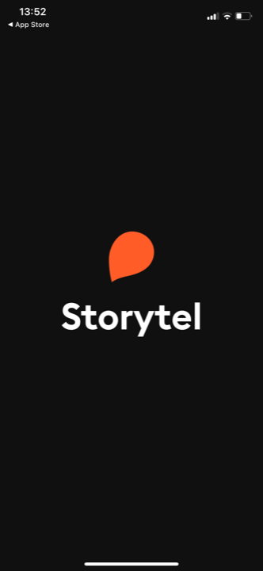
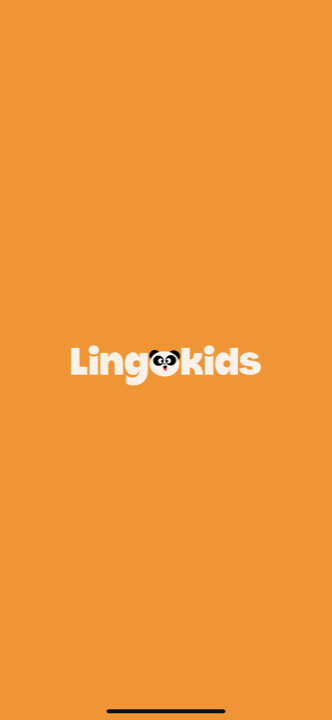
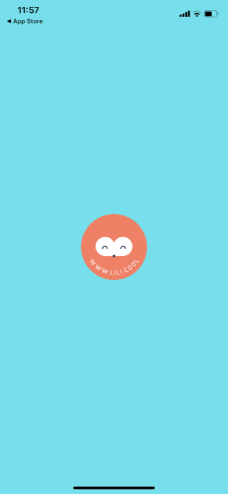
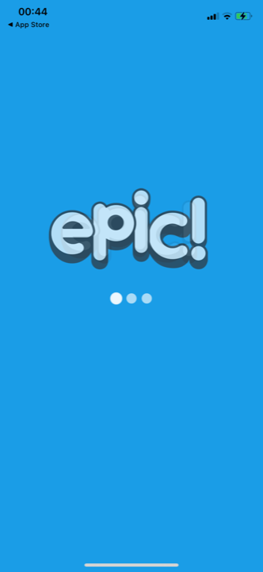
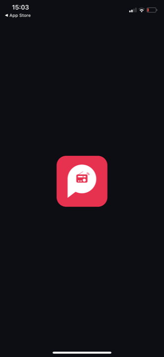
Le personnage centré, traité proprement
Quand la marque a un personnage fort (comme Kidsono), on peut le mettre en splash. La clé : une pose iconique, centrée, et du restraint.
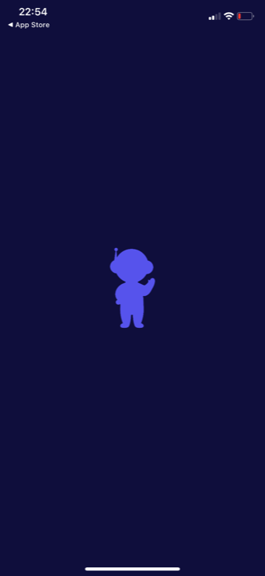
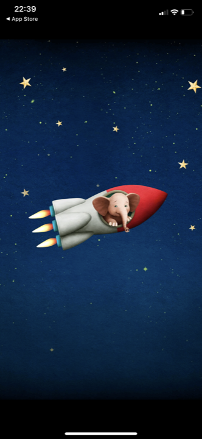
Un fond qui pose un climat
Un fond travaillé (texture, dégradé, motif) pose une humeur. Risque : vite chargé ou cucul si on en met trop.
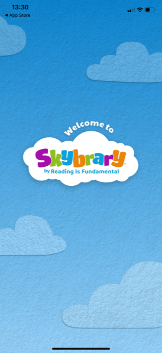
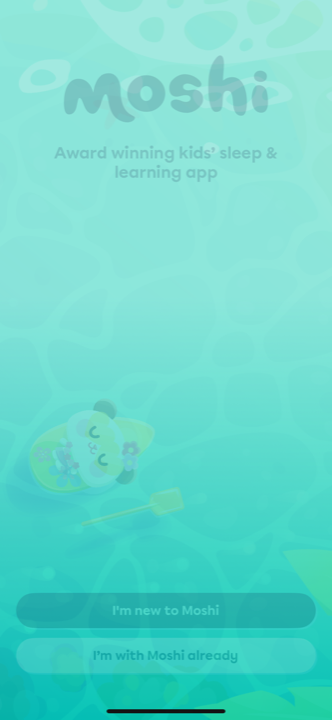
Le welcome-claim · est-ce standard ? coexiste-t-il avec le carrousel ?
Le welcome-claim, c'est l'écran juste après le splash. Il fait deux jobs : (1) UN claim de marque (une seule ligne, pas l'argumentaire complet) ; (2) le carrefour nouveau / déjà-client (router les revenants vers le login, les nouveaux vers l'onboarding). Souvent + le logo, parfois une preuve sociale ou une illustration.
1. Oui, c'est standard — quasi universel chez les apps solides
Toutes les apps solides du domaine ont cet écran : Lingokids, Reading.com, Homer, Super Simple Songs, KiLi. C'est l'entrée normale après le splash. Son vrai moteur, ce n'est pas l'argument de vente, c'est le carrefour nouveau / revenant : un client qui revient ne doit pas refaire l'onboarding, il doit pouvoir se connecter tout de suite.
2. Il coexiste avec le carrousel — il ne le remplace pas, et ne fait pas double emploi
- École dominante (les solides) : welcome-claim séparé, AVANT le carrousel. Jobs différents : le welcome = UN claim + le carrefour (fonction : router) ; le carrousel = l'argumentaire complet (3 slides, réservé aux nouveaux). Ex : KiLi (welcome → tour 3 slides), Lingokids, Homer.
- École plus lean (Epic, Hooked) : pas de welcome dédié, le claim est porté par la slide 1 du carrousel, le login est un petit lien. Plus court, mais le carrefour revenant est moins net.
- Donc pas de confusion : le welcome n'est pas une slide de valeur de plus. C'est l'écran de routage + un seul hook. La valeur, c'est le carrousel.
Le claim + le carrefour « je commence » / « j'ai un compte »
Toutes font le même duo : une ligne de claim, et les deux boutons nouveau / déjà-client. Du plus propre au plus chargé.
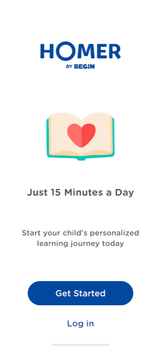

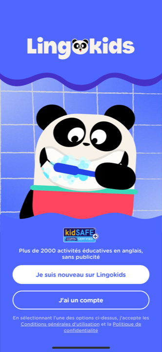
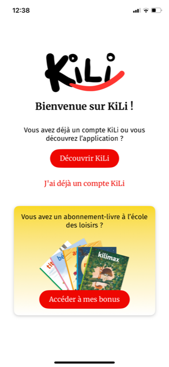
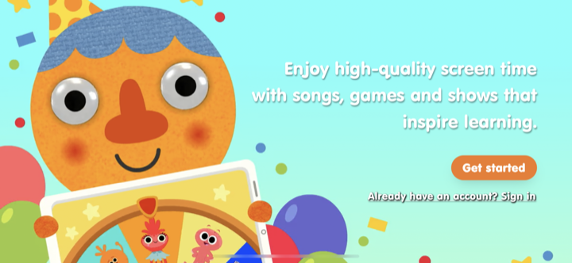
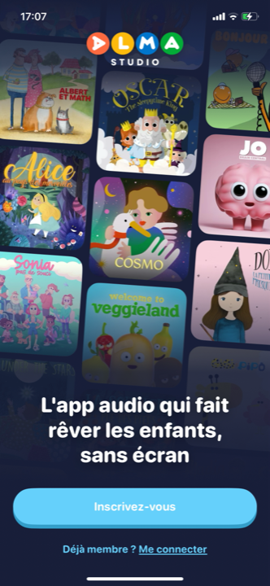
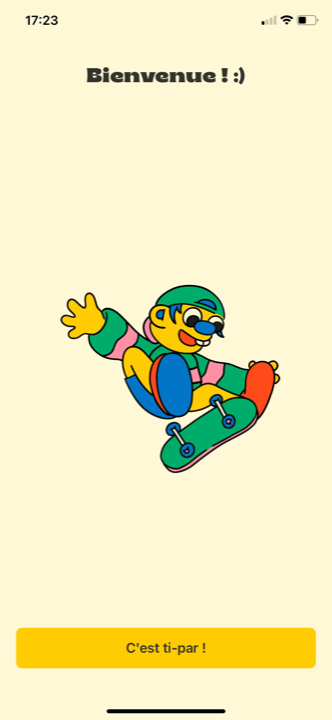
La recommandation pour Kidsono : 3 écrans d'entrée distincts
Splash → welcome-claim → carrousel de valeur
- 1 · Splash (à créer) : identité, bref, au lancement. Archétype mascotte-restraint façon Aumio : la mascotte centrée sur un aplat de marque (crème ou un aplat vif), une pose calme et iconique (pas la pose skate), beaucoup de vide, micro-animation, zéro texte de vente. Alternative plus sobre : le logo Kidsono centré, façon Storytel.
- 2 · Welcome-claim (à créer) : UN claim de marque (par ex. « Du bon son pour bien grandir » ou « La plus belle app de livres audio pour vos enfants ») + le carrefour « je commence » / « j'ai un compte ». C'est ici qu'on règle proprement le routage du compte, aujourd'hui brutal (le « Oups, tu n'es pas connecté »). Un seul hook, pas l'argumentaire complet.
- 3 · Carrousel de valeur (déjà conçu : A, B, C) : l'argumentaire, réservé aux nouveaux. Le welcome NE le remplace PAS et ne le duplique pas.
- À éviter : tout fusionner comme aujourd'hui (mascotte skate + « C'est ti-par ! » qui n'est ni splash, ni welcome, ni argument). Et ne pas remettre un CTA ou le catalogue en fond sur le splash.
L'avis
Force : la voie « mascotte centrée + restraint » (Aumio) donne à Kidsono un splash à la fois chaleureux (son personnage) et propre/premium (le vide, le restraint), sans renier sa DA. Et séparer splash et accueil corrige un vrai défaut actuel.
Risques : la mascotte Kidsono est très colorée et « cartoon » ; sans restraint (silhouette, pose calme, vide), elle retombera vite dans le « enfantin chargé ». Le test : est-ce que ça pourrait être l'écran de lancement d'une app premium, pas d'un jeu mobile ?
Position vs standard : au standard sur l'archétype (logo/mascotte centré), l'enjeu pour Kidsono est uniquement l'exécution (le restraint), pas le concept.
Audit basé sur les captures réelles du benchmark (35 splashs vus en pleine résolution). Mission conseil Kidsono, 2026-06-16.